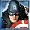
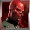
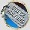
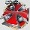
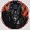

The objective of Captain America – The First Avenger is to obtain winning symbol combinations by spinning the reels.
To play the game:- Line bets are chosen by clicking + and — below Line Bet to increase or decrease the amount.
- Paylines can be activated and their shape displayed by progressively clicking + and — below Lines. Paylines can also be activated by using the numbered buttons on either side of the reels. Selecting a high payline includes all the lower ones too. For example, selecting payline 6 also activates paylines 1 through 5. Clicking Bet Max activates all paylines with the currently selected bet per line and spins the reels.
- Total bet per game round = line bet X active paylines.
- Clicking Spin spins the reels with the current selection of lines and line bets. During the reel spins the Spin button changes intoStop. Clicking Stop ends the spin animation and immediately displays the spin results.
- Reels can also be spun using the Auto Play function. Mouse over the Auto Play button to display the list of options. Select the number of spins to be played automatically or choose Until Feature to spin until the Super Energy Free Games round is triggered. Clicking on an option starts the Auto Play function. The Auto Play button changes into Stop during the Auto Play mode. The Auto Play mode ends when the reels have been spun the number of times determined by the player, or when the Super Energy Free Games round is triggered if you chose Until Feature, or when you click Stop.
- Wins are calculated according to the paytable. Line win = line bet X corresponding multiplier according to the paytable. Scatter win = total bet X corresponding multiplier according to the paytable. The paytable can be accessed via the Info page.
- On a given payline, only the highest payline winning combination pays while simultaneous winnings on different paylines are accumulated.
- In case of a winning spin, the Win field displays the accumulating winnings. The Win ticker can be stopped by clicking anywhere on the screen to display the total win amount immediately.
- Payline wins and the total win are also displayed on the strip located at the bottom of the reels or the game window.
- Clicking Info opens the reference screen describing different game components. Clicking the arrow buttons at the lower right–hand corner of the screen enables navigating between the different info screens.
- The Paytable screen shows all winning combinations. When opened after a winning spin, the winning symbol combinations (number of symbols and bet multiplier) are highlighted and blink.
- The  and  Wilds screen describes the rules for the 2 Wild symbols in the game.
- The 1st Super Energy Free Games screen shows the necessary combination to trigger the Super Energy Free Games and explains the rules of the game while the feature is active.
- The 2nd Super Energy Free Games screen describes the specific behaviour of the Super Spin feature.
- The Marvel Multi–Level Mystery Progressive Jackpot screen describes how to win entry to the Marvel Multi–Level Mystery Progressive Jackpot game that wins one of four jackpots, and explains the game’s rules.
- The Paylines screen illustrates all possible payline combinations and explains the payout rules in the game.
- Clicking Back exits the Info screen and returns to the game.
- Active paylines are represented by lines that appear over the reels. Paylines can be activated and their shape displayed by progressively clicking + or — below Lines.
- Only active paylines can register wins.
- There is a difference between the line bet and the total bet. The line bet shows how much is being bet on a single payline. The total bet shows how much is being bet in total on the game round. Payouts shown in the paytable are multiplied by the line bet.
The Scatter symbol is an exception to these rules. More information about the Scatter symbol can be found below.
About payouts:- Payouts are listed on the Paytable screen. To find the possible win amount, the line bet must be multiplied by the payout.
- If two payline winning combinations occur on the same line, the higher of them is paid out. If more than one active payline has a winning combination, the winnings are accumulated.
- Winning combinations must start from the left most reel, and the symbols have to be consecutive.
The Scatter symbol is an exception to these rules. More information about the Scatter symbol can be found below.
Wild SymbolCaptain America – The First Avenger features 2 Wild symbols: and . Both of them can stand for any other symbol, except and , to make the best possible winning combination.
Whenever appears anywhere on reel #1 in combination with anywhere on reel #3, and anywhere on reel #5 during main game, the Super Energy Free Games are triggered. More information about the Super Energy Free Games can be found here.
There is also a separate payout for 2 or more Wild symbols on an active payline, as seen in the Paytable. This is paid out instead of the regular symbol win if the win amount from Wild is larger than the win from the regular symbols (by Wild standing in).
Note: doubles wins when participating in a winning combination with , , or  during both main game and the Super Energy Free Games.
doubles wins when participating in a winning combination with , , or during both main game and the Super Energy Free Games.
Scatter SymbolThe Scatter symbols do not have to occur on any particular payline. If there are 2 or more Scatter symbols anywhere on the reels after a main game or a Super Energy Free Games spin, the payout earned is multiplied by the total bet and added to payline winnings, if any.
Free Games Symbolis the special Free Games symbol in the Captain America – The First Avenger game. It appears on reel #3 during main game only to create a combination with and , thus triggering the Super Energy Free Games.
Super Energy Free GamesThe Super Energy Free Games are triggered whenever , , and appear simultaneously during main game anywhere on reel #1, #3, and #5 respectively.
To start the Super Energy Free Games round click on Click to Start. You are automatically awarded 4 initial Free Games. ClickContinue to move to the next screen.
A grid of 3x3 squares appears. Each of the 9 squares stands for a Super Energy Free Games Power Feature as described below:
| Symbol On The Grid | Power Feature |
|---|---|
|
4 additional Super Energy Free Games are added to the current ones. 3 of these symbols are positioned on the grid altogether. This makes it possible for you to win up to 12 additional Free Games during a single round. |
|
|
The current multiplier of the Super Energy Free Games is increased by x1. 3 of these symbols are positioned on the grid altogether. This makes it possible for you to win a multiplier of up to x3 adding x1 at a time. |
|
|
is added to reel #3 only during the Super Energy Free Games. Whenever it appears anywhere on that reel in the spin results, 4 more Super Energy Free Games are added to the current ones. |
|
|
The revealed respective symbol acts as Expanding Wilds during the Super Energy Free Games that follow: whenever it appears anywhere on a reel and creates a winning combination it expands, covering the entire reel to become Expanding Wild. All positions on this reel become Wild and all resulting winning combinations are paid. |
|
|
2 Super Spins — the Villain Super Spin and the Hero Super Spin – are awarded after the Super Energy Free Games have ended. The Hero Super Spin features as Expanding Wild on reel #1 and as an Extra Wild added randomly on any position of the 4 remaining reels. Only A, K, Q, J, 10, 9 and , , appear on the reels during the Hero Super Spin. The Villain Super Spin features as Expanding Wild on reel #5 and as an Extra Wild added randomly on any position of the 4 remaining reels. Only A, K, Q, J, 10, 9 and , , appear on the reels during the Villain Super Spin. Note: Extra Wild symbols can replace regular Wild symbols during the Super Spins. In this case the payout along an active payline is won only once. The multiplier, if such is won as a Power Feature, does not apply to the Super Spin results. |
You will be allowed to pick a minimum of 4 and a maximum of all 9 Power Features by clicking on the squares, one at a time, until the chosen field displays the Collect option. Then the round will end and the Super Energy Free Games will automatically begin applying the Power Features that have been previously awarded.
During the Free Games, the reels are spun automatically using the same number of lines and bets per line as on the spin that won the Super Energy Free Games round. After each spin, the win is displayed in the Win field. The Free Games Win field shows the accumulated winnings from the current Free Games.
After all Free Games have been completed, a result board summarizes the winnings. Game Win shows the winnings that were received from the spin that won the Free Games. Feature Win shows the winnings that were received during the Free Games. Total Winshows the accumulated winnings (Game Win and Feature Win added up). If there were no winnings in the main game reels that triggered the Super Energy Free Games round, only Total Win will be shown.
Clicking Continue will return you to the main game. When returning to the main game, clicking anywhere on the screen stops the win ticker and displays the full prize. Free Games wins are added to the payline and Scatter wins.
If Free Games are triggered during the Auto Play mode, the feature begins after the player clicks on Click to Start. When all Free Games have been played and the player clicks Continue on the screen summarizing the Free Games win, the Auto Play mode resumes. When returning to the main game, clicking anywhere on the screen stops the win ticker and displays the full prize.
Marvel Mystery JackpotMarvel Mystery Jackpot is a multi–level progressive jackpot game that is available in all Marvel games and is linked to all Marvel games. A small percentage of each bet in the Marvel games, by every person playing this game in each of many online casinos, is added to the progressive jackpot.
The trigger that starts the Jackpot game is random and can occur after any spin in any of the linked games. It is not caused by any symbol combination in the linked games and even a spin that does not win anything in the main game can trigger the Jackpot game. Likewise, any bet with any size in the linked games can trigger the Jackpot game. Nonetheless, the chances of triggering the Jackpot game increase or decrease proportionally to the bet size. Entering the Jackpot game guarantees a win of one of the four jackpots. Playing the Jackpot game reveals the jackpot that has been awarded to you, but does not determine it.
There are four different levels of jackpots that you can win: Power Jackpot, Extra Power Jackpot, Super Power Jackpot and Ultimate Power Jackpot. Different types of jackpots hold different prize amounts. The jackpot gamescreen contains 20 squares which in the beginning of the gameplay are turned upside down. Clicking on a square will turn it around and reveal one of four jackpot symbols on the other side. Once you have found three matching symbols, you win the jackpot that corresponds to these symbols. Jackpot winnings are added to the main game winnings (if any) and are displayed in the Win field together with any other winnings.
The Marvel Mystery Jackpot game has a timeout timer. This means that if you do not pick a square in a set amount of time, you will automatically receive your prize.
The Jackpot for this game works like this:
| Seed (how much money the Jackpots start out with): | Power: €50 Extra Power: €500 Super Power: €5,000 Ultimate Power: €100,000 |
| Contribution rate (what percentage of each bet goes into Jackpot): | 0.99% |
| Win condition (the result you have to get to win the Jackpot): | Entering the jackpot game guarantees a win. Match 3 jackpot symbols of the corresponding Jackpot or wait for the timer to run out. |
| Win requirements (what you need to do to be eligible for the Jackpot): | Play a Marvel game. |
- The seed and Jackpot values are in Euros in the progressive network and their value in your local currency is dependent on the currency exchange rate.
- The mechanics of Marvel Mystery Jackpot prohibit simultaneous jackpot winnings.
- Imperfections in the Internet connectivity may cause you to experience delays in Jackpot messages or updates, but they do not affect actual Jackpot wins.
The theoretical percentage return to player (RTP) is 94.31%.